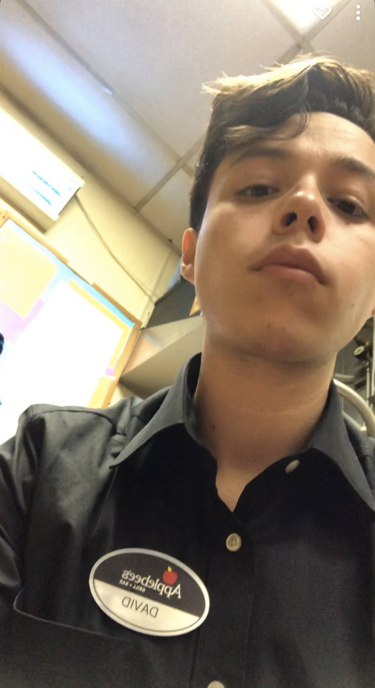
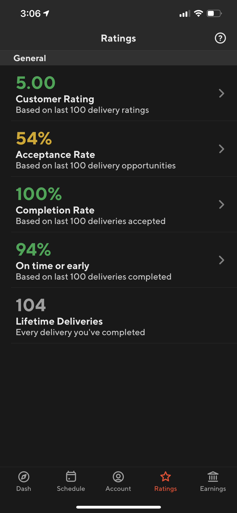
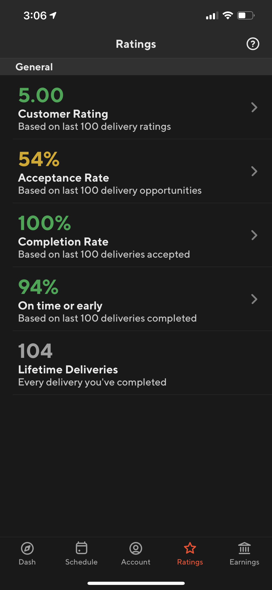
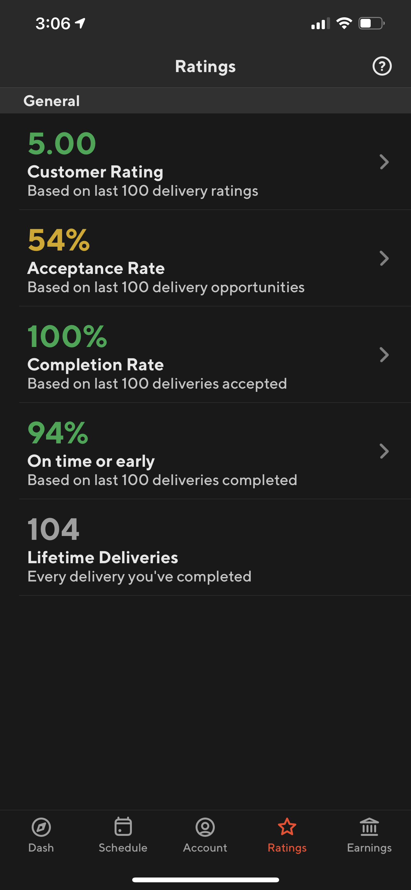

David Barreras
I was always the obese, unattractive kid growing up. Being a twin did not help either, considering the constant comparison from family, friends, and peers. My love for food was always strong as it was one of the core factors that brought my family together. It provided comfort in times of adversity But this did not come without a cost. I grew an addiction to food as it was my escape from the real world and is where I felt safe. Watching Youtube videos after school, earring multiple bags of chips and sweet bread was a daily occurrence. It provided my days with comfort and warmth. I knew nothing about nutrition and exercise, but I did know I was neglecting it.
In middle school, I went through a terrible accident where I shattered my femur in multiple places. Because of this, I was incapable of walking for about two years. With the lack of exercise due to being in bed all day playing video games, I slowly began gaining weight. I reached a weighed of 250 pounds throughout high school after that and found myself unhappy and unfulfilled. That’s when I joined the student running club in my high school. Being the biggest guy there, most did not believe in me, all but my amazing coach Ms. Medina and my twin brother, Pedro. I was unable to run a quarter mile without hyperventilating and have body aches. However, I kept pushing and within a year, I lost 90 pounds and completed the Los Angeles marathon, placing 5th from my team. I learned the importance of protein and calories. I used this knowledge to stay in shape to live a happier and healthier lifestyle. This also aided the beginning of my bodybuilding journey.
In my senior year of high school, after having done the marathon, I began going to the gym with some friends without any true goal. My twin brother, who began six months earlier than me, showed me the ropes about proper form and the importance of progressive overload. I did not see myself becoming a very strong guy, having been physically weak my entire life. Most of the gym sessions that I had when I began were very spontaneous, I did not have a proper workout schedule or curriculum for muscle and strength training. I did not see much progress which in turn made me lose motivation for the gym. I focused most of my training on running, not realizing how important it is to train the muscles as well with weights. During my freshman year of college, my girlfriend at the time broke up with me, which left me shattered, but with a lot of time to work on myself. Seeing the progress Pedro was having all his time at the gym was also a bonus to my motivation. Witnessing how I can look by looking at my identical twin brother added fuel to my enthusiasm in learning more about nutrition and working out. Slowly but surely I started to use proper form, increased my weights over time, and stayed consistent. I soon fell in love with the gym; the progress I was able to see as the months progressed, made me excited for what I was capable of. Learning about health and fitness gave me a sense of worth and purpose. Every day I strive to be better. I try to work harder than last time. Four years into the present, the gym, and the trail are still part of my daily life. Health and fitness are essential for not only my physical health but also my mental health. My goal now is to spread the knowledge that I have acquired throughout my years of setbacks and comebacks. My failures and successes. The disappointments and joy. Health and fitness is just not a hobby or a pastime, it’s a way of life.
Experience
Resident Advisor
• Leanred how to make hard decisions
• Created programs for residents
Education
UC Riverside
University of California Riverside
University of California Riverside
Portfolio


 

